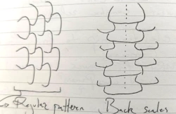
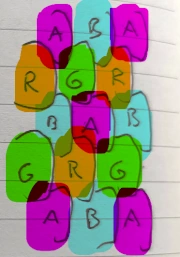
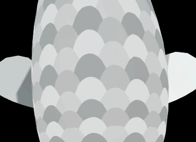
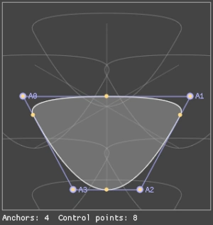
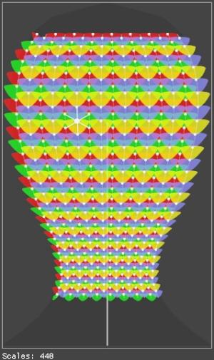

I must admit I've neglected the koi a little bit recently, even though they're the main characters of the game. Since we're going to playtest the game mechanics for the first time soon, I've decided to start work on the scales, which are very important visual properties of real koi too. Koi Farm 1 didn't have scales at all; the game was not really 3D, and the koi just had too few pixels to draw clear scales on, but that has changes in Koi Farm 2. You can get potentially very close to the scales, and they can interact with light and motion in very interesting ways.
Because scales are almost as important as colors and patterns as a genetic expression, they need to be detailed and varied. Some objectives for the scales are:

At this time, there can be 4096 active koi in a game. If there can be, say, 512 scales on a koi body, that means there can be over two million unique scales in a single game. I've had to invent a few techniques to make this possible on normal hardware, because rendering two million detailed overlapping little models would be too slow.

Scales are generally positioned on lateral lines along the koi body, with an alternating offset. This covers the fish body optimally. There are all kinds of variations on this layout, but they all start from this point. There can also be areas on the koi body without any scales, or scales and bare skin can alternate (this is called fukurin).
I've created an algorithm that stores the scales by first separating them into four categories, where scales in a single category may not overlap each other. I store these four categories in the red, green, blue and alpha channels of an image respectively. When a koi renders its body, this texture is read, and zero to four overlapping scales may be found on this image for any pixel of the koi. Then I sort the found scales by height (each scale has some properties associated with it), and render them in order. This means I can apply transparency, antialiasing and potentially other blending techniques.

Every scale has its own transformation, they're relatively rigid after all. Before rendering the koi, the transformation for each scale is calculated. The results are later used in lighting calculations, while the skin under the scales still follows the smooth body shape under it.
The image shows a simple scales pattern rendered using this technique without lighting applied. Each koi can have up to 512 unique scales on its skin. The shapes edges remain sharp no matter the zoom level or fish body transformation, just like the pigment patterns. Under it, the shape of a single scale can be seen.


For each koi, a main scale shape is synthesized from its DNA. In the example images, this is a rather simple scale, but they can have any level of complexity. The shape has to be able to cover the underlying skin if it's laid out in a common scale pattern, with six neighboring scales around it (two on the longitudinal axis, and two on the diagonal axes). This shape isn't just copied over the koi body, it takes the surrounding context into account and is warped accordingly. If the diagonal lines are warped, the scales warp with it, and some scales can have different sizes. This is commonly seen in doitsu variants for example, where scales on the back are much bigger than scales on the sides.
The scales system is now ready to extend:
In addition to the scale system, the engine has also received a number of upgrades. The system that uploads data from the CPU to the GPU is now a lot faster and simpler, and several GPU algorithms that are now used by multiple systems use the same pathways. This makes development easier, and as a bonus, optimizing a single system has impact across the game. I've also started using asynchronous compute, which means that the GPU can do more work in the same time: while it's working on a frame, GPU cores are often idle while they're waiting for memory or other parts of the GPU to do something. I'm now supplying the GPU with low priority work during that time, like rendering scales and patterns for new koi, so these bubbles are filled with useful work. That means I don't have to do the work before or after rendering a frame which would slow down rendering.
Because the scale and spot systems now share code, I've also taken a closer look at the system that "grows" patterns on a koi. The pigment cells were triangulated, I created a Voronoi diagram from that triangulation, and extracted the resulting shapes. We're designing new koi cards at the moment that will display information about the number of spots, the visible pigments and other details. If the spots are created from blobs of pixels, it's hard to infer what's actually visible. This was a problem with Koi Farm 1, where a card would for example show that the koi had red pigment on it, but no red spots were visible. In those cases, a red pigment layer existed, but the spots algorithm by chance showed no spots. To prevent this, I've turned each spot into a polygon (which is now also smoothed as a bonus), so I can simply count the number of polygons to know how many spots there are. I can also easily detect whether a polygon is completely overlapped by another one, which means the game won't report invisible spots. Because I now have a polygon for each shape, I can also post-process these polygons to apply additional visual effects. I can extrude them, filter spots of a certain size, or distort the edges. This means the koi have even more properties to mutate.
I've also purchased a new laptop that's in many cases the opposite of the desktop computers I've been developing Koi Farm 2 on until now. It has a shared memory architecture, an integrated low power GPU, and an ARM processor (as opposed to the x86 processors I've been using). There are still some bugs on this system that prevent the game from running because the graphics drivers for the integrated GPU are very different, we've had similar issues when porting the engine to the Switch. If the game runs on this laptop however, the game should run well on the vast majority of computers.
A CPU with an integrated GPU and shared memory is also common for phones, and while these systems are often weaker, they are very power efficient and there are some ways to optimize software for them specifically which I'll look into. The most affordable laptops are similar to the one I bought, and with the enduring chip shortages, I expect a large part of future Koi Farm 2 players to own a similar system, so it's important that the game runs well on them.